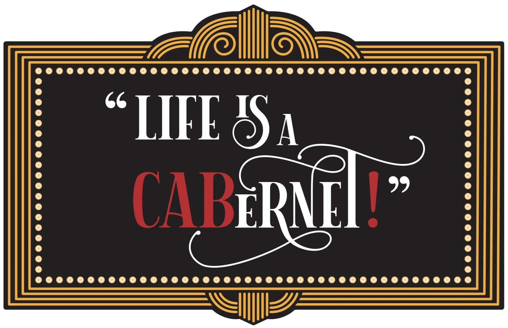

The Scandalous Cabernet Sauvignon: Wine's Greatest “Oops!”

Every great wine has a story, but few are as deliciously messy as the origin of Cabernet Sauvignon. For centuries, this grape has been called the king of reds. It turns out the king was actually a total accident.
A Botanical One-Night Stand
For generations, winemakers and drinkers wondered where this mysterious grape came from. The truth did not actually emerge until the 1990s when DNA testing finally solved the mystery. It was not the result of careful human planning or centuries of selective breeding.
Instead, a Sauvignon Blanc plant and a Cabernet Franc plant happened to cross paths in a French vineyard. This random, unplanned encounter created what would become the most celebrated red grape in the world.
Best of Both Worlds
What makes this "botanical serendipity" so special is that the grape inherited the best traits from both parents. It took the firm structure of Sauvignon Blanc and the deep intensity of Cabernet Franc.
It also developed some evolutionary advantages of its own. Its thick skins provided bold tannins and incredible longevity. Its natural resilience made it relatively easy to grow. It is a rare win for nature that a chance encounter produced a wine that could adapt to Napa, Bordeaux, and Australia while still tasting like itself.
Make it a Meal
If you want to lean into this accidental masterpiece at home, you need food that can handle its ego.
- The Main Course: Because Cabernet Sauvignon inherited those savory, herbal notes from its Cabernet Franc parent, it is a perfect match for braised short ribs with plenty of thyme. The rich fat in the beef softens the wine's bold tannins, making the whole experience much smoother.
- The Perfect Side: For a vegetarian pairing that still feels substantial, try charred radicchio with a balsamic glaze. The natural bitterness of the greens stands up to the wine's structure, while the balsamic sweetness pulls out the dark fruit flavors in the glass. It is a sophisticated way to turn a "happy accident" into a deliberate, top-tier dinner.
Proof of a Plot Twist
The next time you pull a cork on a bottle of Cabernet, remember that you are drinking proof that nature enjoys a good plot twist. Sometimes the best things in life really are unplanned.
We have a few of our favourite "accidental" masterpieces on the shelves right now. Stop by the shop and we can help you find the right one.